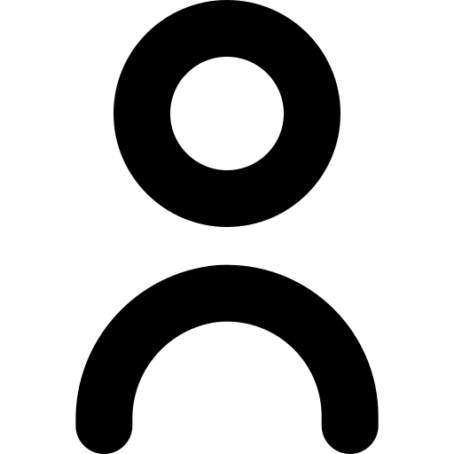
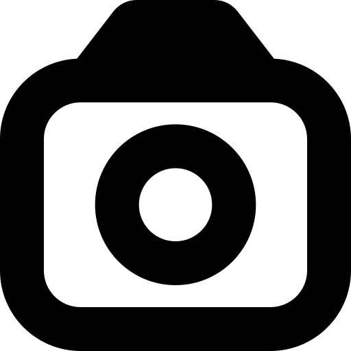

IntroHello, my name is Appie, and while I don't think my backstory is that outlandish, I
do believe
it's a mix of ambition and complexity. I'm a 19-year-old who lives in Belgium, speaks five languages,
and I have a
deep passion for everything that involves computers. My goal is simple but bold: to become the best at
what I do.
Learning and AmbitionsI'm not just a computer science enthusiast; I'm obsessed with
mastering the
low-level, high-performance stuff. Whether it's C, C++, Rust, Python, or Java, I want to break down
every line of
code and rebuild it better. The journey is hard, but every bug I squash and every optimization I find
takes me one
step closer to the top.
FriendsIf I had to sum up my attitude toward friendships, it's a love-hate relationship.
I enjoy
spending time with friends, sharing laughs, and helping out where I can. But the truth is, I'm pretty
demanding of
the people I keep close. If you're in my circle, I expect you to strive as hard as I do, or I might just
feel you're
wasting your potential — and that annoys me more than anything else.
HobbiesOutside of coding and tech, I find joy in pushing my creativity through projects.
Whether it's
tinkering with a Raspberry Pi, designing a clean i3 setup, or optimizing my workflow, I love turning
small ideas
into functioning solutions. It's satisfying to build something from scratch and see it work seamlessly.
MartheOne of the most meaningful parts of my life is my partner, Marthe. They have their
own dreams
and aspirations, and it's inspiring to watch someone pursue what they love. Whether it's math, science,
or figuring
out what comes next, we're two different minds finding ways to build something beautiful together.
FutureWhere do I see myself? At the forefront of technology — building optimized systems,
contributing to open-source, and pushing boundaries in programming. Whether I'm creating Minecraft
plugins for fun
or architecting low-latency systems, I want my work to speak for itself. The best version of me is still
under
construction, but I'm committed to seeing it through.